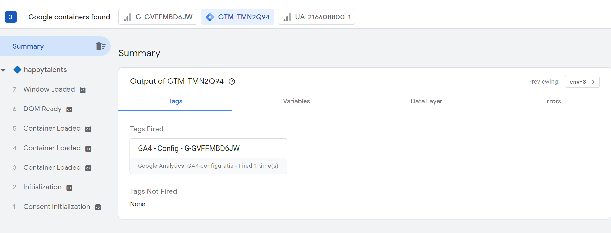

Aanpak
Na het behalen van de Google Tag Manager certificaat via de GA Academy
van Google, wilde ik de geleerde theorie in de praktijk gaan toepassen. Mijn groepsgenootje Lise heeft de
Happy Talents landingspagina voor het werven van zzp’ers en werkstudenten in HTML en CSS uitgewerkt. In deze
landingspagina wil ik via GTM events gaan aflezen zoals hoe vaak er gedrukt is op aanmelden van de
nieuwsbrief of aanmelden als zzp’er.
Implementeren Google Tag Manager
De eerste stap was het online zetten van de website en hier vervolgens
Google Analytics aan toe te voegen. Na het succesvol toevoegen van GA aan de landingspagina ben ik een
account gaan aanmaken voor Google Tag Manager en vervolgens heb ik een happytalents container gemaakt.
Na het maken van de container is een script ontstaan die ik heb
toegevoegd aan code van de website.
Na het toevoegen van de code en het toevoegen van de url in GTM is de
connectie tussen Tag Manager en de website gelegd. Verder is ook de connectie tussen Tag Assistant en de
website gelegd zodat er een preview beschikbaar is. In de preview is mogelijk om extra informatie in te zien
rondom de aangemaakte tags en of deze ook daadwerkelijk worden geactiveerd.
Eerste tag
De eerste tag die ik heb gemaakt is de config tag voor de configuratie
met Google Analytics om zo te checken of er daadwerkelijk ook data wordt doorgestuurd vanuit de website naar
Google Tag Manager. De trigger die aan deze tag is verbonden zijn paginaweergaves. Wat in de praktijk
betekend dat als er een pagina wordt bezocht dit zichtbaar zou moeten zijn in de data.
Zoals in onderstaande afbeelding is te zien in GTM preview mode is de
config tag succesvol geactiveerd bij het bezoeken van een pagina in container loaded.

In Google Analytics is het daaropvolgend mogelijk om in de debug view te
checken of de config tag ook echt werkt. In de debug view komt bij het bezoeken van een pagina een page_view
event te staan wat dus betekent dat de config tag is geactiveerd.
Link clicking
Na het testen van de connectie tussen GTM en GA was de volgende stap een
trigger aan te maken voor het testen van het binnenkrijgen van data bij het drukken op een link. Hiervoor
heb ik een klik all links aangemaakt.
In de preview heb ik gecheckt of de trigger plaatsvind en of deze
ook weer binnenkomt in de resultaten. Uit de onderstaande afbeelding is af te lezen dat deze inderdaad weer
binnenkomt bij het drukken op een link.
Aanpak Nieuwsbrief link clicking
Op dat moment kwam er een melding binnen in de preview als er op elke
willekeurige link wordt gedrukt, hieruit is natuurlijk weinig af te lezen. Daarom ben ik de trigger gaan
instellen zodat deze geactiveerd wordt bij een specifieke link en in dit geval het aanmelden voor de
nieuwsbrief gebaseerd op het click id(aanmeldknop), die deze link heeft.
De data die dan binnenkomt in bij het drukken op de link is erg
uitgebreid waardoor het moeilijk af te lezen is wat er nou precies is gebeurd.
Om deze data alleen de waardes mee te geven die ik wil inzien heb ik
parameters ingesteld zoals de naam en de URL zodat de data zichtbaar wordt die ik relevant vind.
Resultaat nieuwsbrief link clicking
Resultaat in de tag assistant na het klikken op knop voor het aanmelden
van de nieuwsbrief is een succesvol geactiveerde tag met daarin de meegestuurde data vanuit de opgezette
parameters.

Resultaat in Google Analytics
De resultaten zijn vervolgens ook te bekijken in Google Analytics. Zo is
zichtbaar als een gebruiker op de website op de knop voor het aanmelden van de nieuwsbrief heeft geklikt dit
in een rapport zichtbaar is met de bijbehorende naam. Hierdoor is dus bij te houden hoe vaak er op de knop
aanmelden voor de nieuwsbrief is gedrukt.
Reflectie
Tijdens het volgen van de cursus Google Tag Manager voor het behalen van
het certificaat GTM vond ik de stof nog best wel pittig en moest ik een aantal vragen overnieuw doen. Ik was
dus best wel benieuwd hoe ik het zou gaan vinden om de theorie ook in de praktijk toe te passen.
Tijdens het toepassen merkte ik eigenlijk dat ik het minder lastig vond dan ik van te voren dacht. Ik ging er vrij soepel doorheen en zag de logica van de werking tussen tags en triggers goed in. Het gaf echt voldoening als ik in de Tag assistant zag dat een tag succesvol was geactiveerd, ik ben dan ook best wel trots op het eindresultaat. Zo heb ik weer een extra toevoeging geleerd naast Google Analytics
Tijdens het toepassen merkte ik eigenlijk dat ik het minder lastig vond dan ik van te voren dacht. Ik ging er vrij soepel doorheen en zag de logica van de werking tussen tags en triggers goed in. Het gaf echt voldoening als ik in de Tag assistant zag dat een tag succesvol was geactiveerd, ik ben dan ook best wel trots op het eindresultaat. Zo heb ik weer een extra toevoeging geleerd naast Google Analytics